mf_map() is the main function of the package, it displays map layers on a
georeferenced plot.
mf_map() has three main arguments:
x, an sf object,var, the name(s) of a variable(s) to map,type, the map type.
Usage
mf_map(x, var, type = "base",
breaks, nbreaks, pal, alpha, rev, inches, val_max, symbol, col,
lwd_max, val_order, pch, cex, border, lwd, col_na, cex_na, pch_na,
expandBB, extent, bg, add,
leg_pos, leg_title, leg_title_cex, leg_val_cex, leg_val_rnd,
leg_val_dec, leg_val_big, leg_no_data, leg_frame, leg_frame_border,
leg_horiz, leg_adj, leg_bg, leg_fg, leg_size,
leg_box_border, leg_box_cex, ...)Arguments
- x
object of class
sf- var
name(s) of the variable(s) to map (see Details)
- type
map type
base: base maps
choro: choropleth maps
typo: typology maps
prop: proportional symbols maps
prop_choro: proportional symbols with choropleth coloration
prop_typo: proportional symbols with typology coloration
symb: symbols maps
grad: graduated symbols maps
symb_choro: symbols with choropleth coloration
- breaks
break values or classification method name such as 'quantile', 'equal', 'msd', 'ckmeans' (natural breaks), 'Q6' or 'geom' (see Details)
- nbreaks
number of classes.
- pal
a set of colors or a palette name (see Details)
- alpha
colorpalopacity, in the range [0,1] (0 means transparent and 1 means opaque). Default is set to 1.- rev
if
palis a palette name, whether the ordering of the colors should be reversed (TRUE) or not (FALSE)- inches
size of the largest symbol in inches (radius for circles, half width for squares)
- val_max
maximum value corresponding to the largest symbol or line
- symbol
type of proportional symbols, either "circle" or "square"
- col
fill color of polygons, lines, points, proportional and graduated symbols. It can be a hex code or a color name given by colors.
- lwd_max
width of the largest line
- val_order
modalities order in the legend, a character vector that matches
varmodalities. Default to alphabetic order of modalities.- pch
type of point symbol (see Details)
- cex
point symbol size, numerical value giving the amount by which symbols should be magnified relative to the default (see Details)
- border
border color of polygons, points and symbols, a hex code or a color name given by colors.
- lwd
line width of borders of polygons, points and symbols or lines (see Details)
- col_na
color for missing values, a hex code or a color name given by colors.
- cex_na
point symbol size for missing values on points
- pch_na
type of point symbol for missing values on points
- expandBB
expansion of the map area in each direction (bottom, left, top, right). The expansion is expressed as a share of
xwidth (for left and right values) or a share ofxheight (for bottom and top values).- extent
sfobject used to define the map extent; defaults tox.extentandxmust use the same CRS.- bg
background color of the map, hex code or color name given by colors, ignored if
add = TRUE- add
whether to add the layer to an existing plot (TRUE) or not (FALSE)
- leg_pos
position of the legend, one of 'topleft', 'top','topright', 'right', 'bottomright', 'bottom', 'bottomleft', 'left' or a vector of two coordinates in map units (c(x, y)). Use
NAto avoid plotting the legend, use 'interactive' to choose the legend position by clicking on the map.- leg_title
legend title (see Details)
- leg_title_cex
size of the title
- leg_val_cex
size of the values
- leg_val_rnd
number of decimal places of the values displayed in the legend (see Details)
- leg_val_dec
decimal separator
- leg_val_big
thousands separator
- leg_no_data
label for missing values (see Details)
- leg_frame
whether to add a frame to the legend (TRUE) or not (FALSE)
- leg_frame_border
border color of the legend frame
- leg_horiz
display the legend horizontally. It only applies to prop and choro map types (see Details)
- leg_adj
adjust the position of the legend in x and y directions
- leg_bg
color of the legend background
- leg_fg
color of the legend foreground
- leg_size
size of the legend. Combine this argument with
leg_title_cexandleg_val_cex.- leg_box_border
border color of legend boxes (for types related to choropleth and typology)
- leg_box_cex
width and height size expansion of boxes (for types related to choropleth and typology)
- ...
ignored
Details
- x
an
sfobject, for base map typesfcandsfgobjects are also accepted.- var
A vector of two names is required for the following map types.
For prop_choro map type, the first name refers to the proportional symbols, the second one to the choropleth coloration.
For prop_typo map type, the first name refers to the proportional symbols, the second one to the typology coloration.
For symb_choro map type the first name refers to the symbols categories, the second one to the choropleth coloration.- breaks
It can be either a numeric vector with the actual breaks, or a classification method name. See mf_get_breaks for details on available methods.
- pal
palcan be a palette name (such as "Reds 2" or "Inferno"). These names can be obtained with hcl.pals and an overview of all available palettes is given in hcl.pals examples.palcan be a vector of colors defined by their hex codes or color names given by colors: c("#7F000D", "#A9565A", "#CA9496", "#E2CBCB", "#F1F1F1") or c("red", "yellow", "green", "black")- pch
For base, choro, typo and grad map types, a single value is needed.
For symb and symb_choro map types, a vector of point symbols with a length that matches the number of modalities is needed.
See pch for the available symbols.- cex
For base, choro, typo, prop and prop_typo map types, it should be a single value.
For symb and symb_choro map types, it shoud be a single value or a vector of sizes (the vector length must match the number of modalities).
For the grad map type applied to points or polygons, it must be a vector of sizes (the vector length must match the number of classes).- lwd
It must be a single value for all map types. The only exception is the grad map type applied to lines, for which it should be a vector of line widths. The vector length must match the number of classes.
- leg_title
This argument need two values when using prop_choro, the first values refers to the proportional symbols legend, the second one to the choropleth legend.
This argument need two values when using prop_typo, the first values refers to the proportional symbols legend, the second one to the typology legend.
This argument need two values when using symb_choro, the first value refers to the symbols legend, the second one to the choropleth legend.- leg_val_rnd
The values are only rounded for the legend and raw values are used on the map.
This argument need two values when using prop_choro, the first value refers to the symbols legend, the second one to the choropleth legend.- leg_no_data
This argument need two values when using symb_choro, the first value refers to the symbols legend, the second one to the choropleth legend.
- leg_horiz
This argument need two values when using prop_choro, the first value refers to the symbols legend, the second one to the choropleth legend.
Default colors and palettes
Default colors and palettes are defined by the cartographic
theme. mf_theme documentation explains how to inspect and modify these
default colors and palettes.
Current theme parameters are set in mapsf options and are extracted with
getOption() in the following section.
Relevant arguments and default values for each map type:
Relevant arguments and default values are different for each map type, and they also may differ given the type of object that is displayed (polygons, lines or points).
Base maps (default)
mf_map() can be used to display geographic layers (sf objects), using
the default map type base.
For polygons:
mf_map(x, col = getOption("mapsf.foreground"),
border = getOption("mapsf.highlight"),
lwd = .7, lty = 1,
alpha, expandBB, extent, bg, add = FALSE)For points:
mf_map(x, col = getOption("mapsf.highlight),
border = getOption("mapsf.foreground"),
pch = 20, cex = 1, lwd = .7,
alpha, expandBB, extent, bg, add = FALSE)
For lines:
mf_map(x, col = getOption("mapsf.highlight),
lwd = .7, lty = 1,
alpha, expandBB, extent, bg, add = FALSE)
Choropleth maps
With the choro map type, mf_map() displays a choropleth map.
In choropleth maps, areas are shaded according to the variation of a
quantitative variable.
They are used to represent ratios or indices.
For polygons:
mf_map(x, var, type = "choro",
breaks = "quantile", nbreaks, pal = getOption("mapsf.pal_seq"),
rev = FALSE, border = getOption("mapsf.highlight"),
lwd = .7, col_na = "white",
alpha, expandBB, extent, bg, add = FALSE, leg_*)
For points:
mf_map(x, var, type = "choro",
breaks = "quantile", nbreaks, pal = getOption("mapsf.pal_seq"),
rev = FALSE, border = getOption("mapsf.background"),
pch = 21, cex = 2, lwd = .7, col_na = "white",
alpha, expandBB, extent, bg, add = FALSE, leg_*)
For lines:
mf_map(x, var, type = "choro",
breaks = "quantile", nbreaks, pal = getOption("mapsf.pal_seq"),
rev = FALSE, lwd = .7, col_na = "white",
alpha, expandBB, extent, bg, add = FALSE, leg_*)
Typology maps
With the typo map type, mf_map() displays a typology map.
In typology maps, areas are shaded according to the modalities of a
qualitative variable.
For polygons:
mf_map(x, var, type = "typo",
pal = getOption("mapsf.pal_quali"), rev = FALSE, val_order,
border = getOption("mapsf.highlight"), lwd = .7, col_na = "white",
alpha, expandBB, extent, bg, add = FALSE, leg_*)
For points:
mf_map(x, var, type = "typo",
pal = getOption("mapsf.pal_quali"), rev = FALSE, val_order,
border = getOption("mapsf.background"),
pch = 21, cex = 2, lwd = .7, col_na = "white",
alpha, expandBB, extent, bg, add = FALSE, leg_*)
For lines:
mf_map(x, var, type = "typo",
pal = getOption("mapsf.pal_quali"), rev = FALSE,
val_order, lwd = .7, col_na = "white",
alpha, expandBB, extent, bg, add = FALSE, leg_*)
Proportional symbols maps
With the prop map type, mf_map() displays symbols (squares or circles)
with areas proportional to a quantitative variable (stocks).
For polygons, centroids are used to plot proportional symbols.
For polygons and points:
mf_map(x, var, type = "prop",
inches = .3, val_max, symbol = "circle",
col = getOption("mapsf.highlight),
border = getOption("mapsf.background), lwd = .7,
expandBB, extent, bg, alpha, add = FALSE, leg_*)
For lines:
mf_map(x, var, type = "prop",
val_max, lwd_max = 20, col = getOption("mapsf.highlight),
expandBB, extent, bg, alpha, add = FALSE, leg_*)
Proportional symbols with choropleth coloration maps
mf_map() with prop_choro type creates symbols that are proportional
to values of a first variable and colored to reflect the classification of a
second variable.
This map types uses two variables and some arguments need to be set for both
variables (see leg_title, leg_val_rnd and leg_horiz Details).
For polygons, centroids are used to plot proportional symbols. This map type
is not available for lines.
For polygons and points:
mf_map(x, var, type = "prop_choro",
inches = .3, val_max, symbol = "circle",
pal = getOption("mapsf.pal_seq"), rev = FALSE,
breaks = "quantile", nbreaks, border = getOption("mapsf.background"),
lwd = .7, col_na = "white",
alpha, expandBB, extent, bg, add = TRUE, leg_*)
Proportional symbols with typology coloration maps
mf_map() with prop_typo type creates symbols that are proportional
to values of a first variable and colored to reflect the modalities of a
second qualitative variable.
This map types uses two variables and some leg_title need to be set for
both variables (see leg_title Details).
For polygons, centroids are used to plot proportional symbols.
For polygons and points:
mf_map(x, var, type = "prop_typo",
inches = .3, val_max, symbol = "circle",
border = getOption("mapsf.background"),
pal = getOption("mapsf.pal_quali"), rev = FALSE, val_order,
lwd = .7, col_na = "white",
alpha, expandBB, extent, bg, add = FALSE, leg_*)
For lines:
mf_map(x, var, type = "typo",
lwd_max = 15,
pal = getOption("mapsf.pal_quali"), rev = FALSE, val_order,
col_na = "white",
alpha, expandBB, extent, bg, add = FALSE, leg_*)
Symbols maps
mf_map() can use symbols to display qualitative data, using symb
map type.
For polygons, centroids are used to plot symbols. This map type
is not available for lines.
For polygons and points:
mf_map(x, var, type = "symb",
pch, cex = 2, lwd = .7, pal = getOption("mapsf.pal_quali"),
rev = FALSE, border = getOption("mapsf.background"),
val_order,
col_na = "grey", pch_na = 4, cex_na = 1,
alpha, expandBB, extent, bg, add = TRUE, leg_*)
Graduated symbols maps
With the grad map type, mf_map() displays graduated symbols
on a map.
Graduated symbols are based on classified quantitative variables.
For polygons, centroids are used to plot graduated symbols.
For polygons and points:
mf_map(x, var, type = "grad",
breaks = "quantile", nbreaks = 3,
col = getOption("mapsf.highlight"),
border = getOption("mapsf.background"),
lwd = .7, pch = 21, cex = seq(1, 4, length.out = nbreaks),
alpha, expandBB, extent, bg, add = TRUE, leg_*)
For lines:
mf_map(x, var, type = "grad",
breaks = "quantile", nbreaks = 3,
col = getOption("mapsf.highlight"),
lwd = seq(1, 4, length.out = nbreaks),
alpha, expandBB, extent, bg, add = TRUE, leg_*)
Symbols with choropleth coloration maps
mf_map() with symb_choro type creates symbols that reflect modalities
of a first qualitative variable and colored to reflect the classification of
a second variable.
This map types uses two variables and some arguments need to be set for both
variables (see leg_title and leg_no_data Details).
For polygons, centroids are used to plot symbols. This map type
is not available for lines.
For polygons and points:
mf_map(x, var, type = "symb_choro",
pch, cex = 2, lwd = .7,
border = getOption("mapsf.background"), val_order,
pal = getOption("mapsf.pal_seq"), rev = FALSE,
breaks = "quantile", nbreaks,
pch_na = 4, cex_na = 1, col_na = "white",
alpha, expandBB, extent, bg, add = TRUE, leg_*)
Examples
mtq <- mf_get_mtq()
pts <- mf_get_mtq("points")
flows <- mf_get_mtq("lines")
# basic examples
# type = "base"
mf_map(mtq)
# type = "prop"
mf_map(mtq)
mf_map(mtq, var = "POP", type = "prop")
 # type = "choro"
mf_map(mtq, var = "MED", type = "choro")
# type = "choro"
mf_map(mtq, var = "MED", type = "choro")
 # type = "typo"
mf_map(mtq, "STATUS", "typo")
# type = "typo"
mf_map(mtq, "STATUS", "typo")
 # type = "symb"
mf_map(mtq)
mf_map(mtq, "STATUS", "symb")
# type = "symb"
mf_map(mtq)
mf_map(mtq, "STATUS", "symb")
 # type = "grad"
mf_map(mtq)
mf_map(mtq, var = "POP", type = "grad")
# type = "grad"
mf_map(mtq)
mf_map(mtq, var = "POP", type = "grad")
 # type = "prop_choro"
mf_map(mtq)
mf_map(mtq, var = c("POP", "MED"), type = "prop_choro")
# type = "prop_choro"
mf_map(mtq)
mf_map(mtq, var = c("POP", "MED"), type = "prop_choro")
 # type = "prop_typo"
mf_map(mtq)
mf_map(mtq, var = c("POP", "STATUS"), type = "prop_typo")
# type = "prop_typo"
mf_map(mtq)
mf_map(mtq, var = c("POP", "STATUS"), type = "prop_typo")
 # type = "symb_choro
mf_map(mtq)
mf_map(mtq, var = c("STATUS", "MED"), type = "symb_choro")
# type = "symb_choro
mf_map(mtq)
mf_map(mtq, var = c("STATUS", "MED"), type = "symb_choro")
 # Base map type
mf_map(mtq, lty = 3)
mf_map(pts, col = "red", border = "white", pch = 21, add = TRUE)
mf_map(flows, col = "coral", lwd = 2, add = TRUE)
# Base map type
mf_map(mtq, lty = 3)
mf_map(pts, col = "red", border = "white", pch = 21, add = TRUE)
mf_map(flows, col = "coral", lwd = 2, add = TRUE)
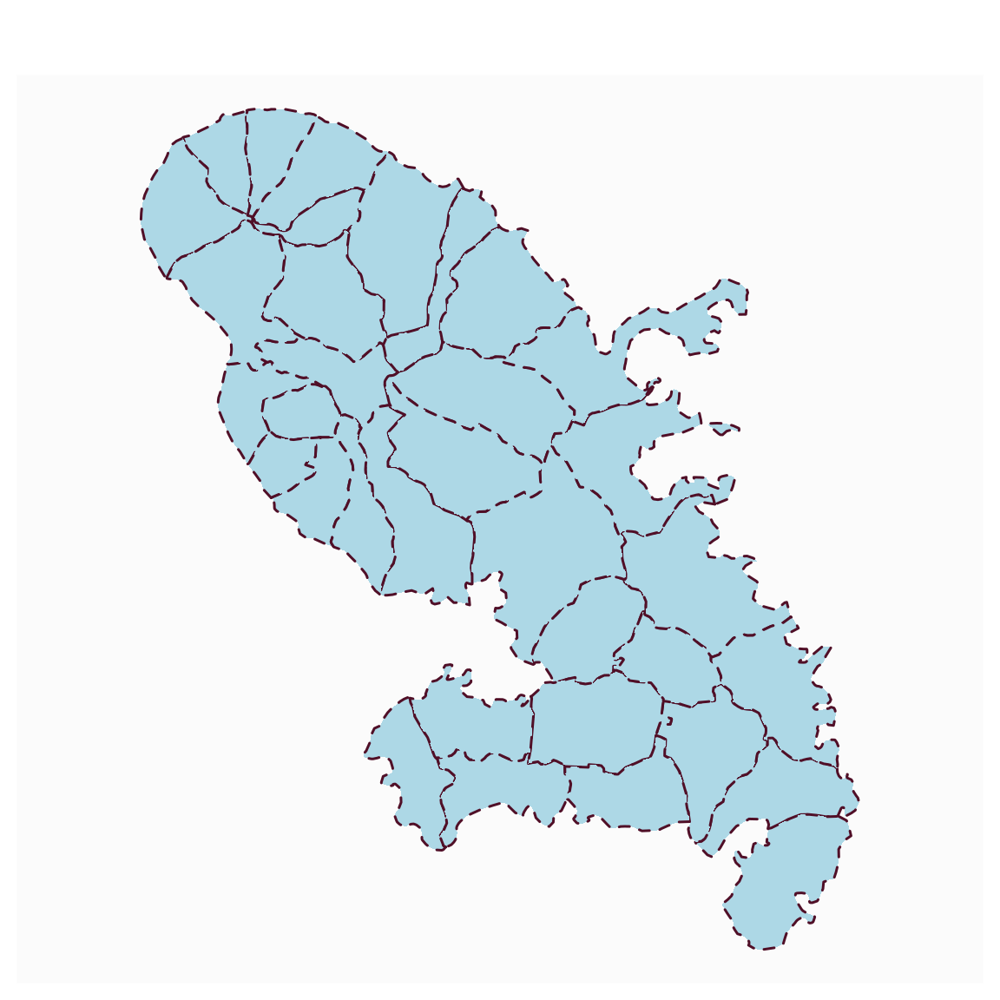
# Choropleth map type
# polygons
mtq[6, "MED"] <- NA
mf_map(
x = mtq, var = "MED", type = "choro",
col_na = "grey90", pal = "Cividis",
breaks = "equal", nbreaks = 5, border = "white",
lwd = .5, leg_pos = "topleft",
leg_title = "Median Income", leg_title_cex = 1,
leg_val_cex = .9, leg_val_rnd = -2, leg_no_data = "No data",
leg_box_cex = c(.5, 3), leg_box_border = NA, leg_frame = FALSE
)
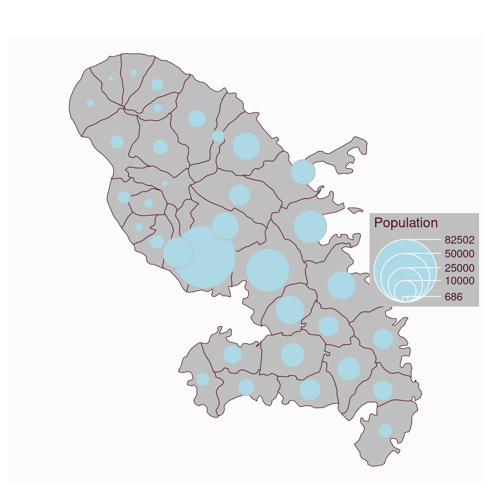
# points
mf_map(mtq)
mf_map(
x = pts, var = "MED", type = "choro",
pch = 21, cex = 3, lwd = 1.2,
pal = "Teal", border = "white",
leg_horiz = FALSE, leg_val_big = " ",
leg_val_rnd = -2, leg_pos = "topright",
leg_frame = TRUE, add = TRUE
)
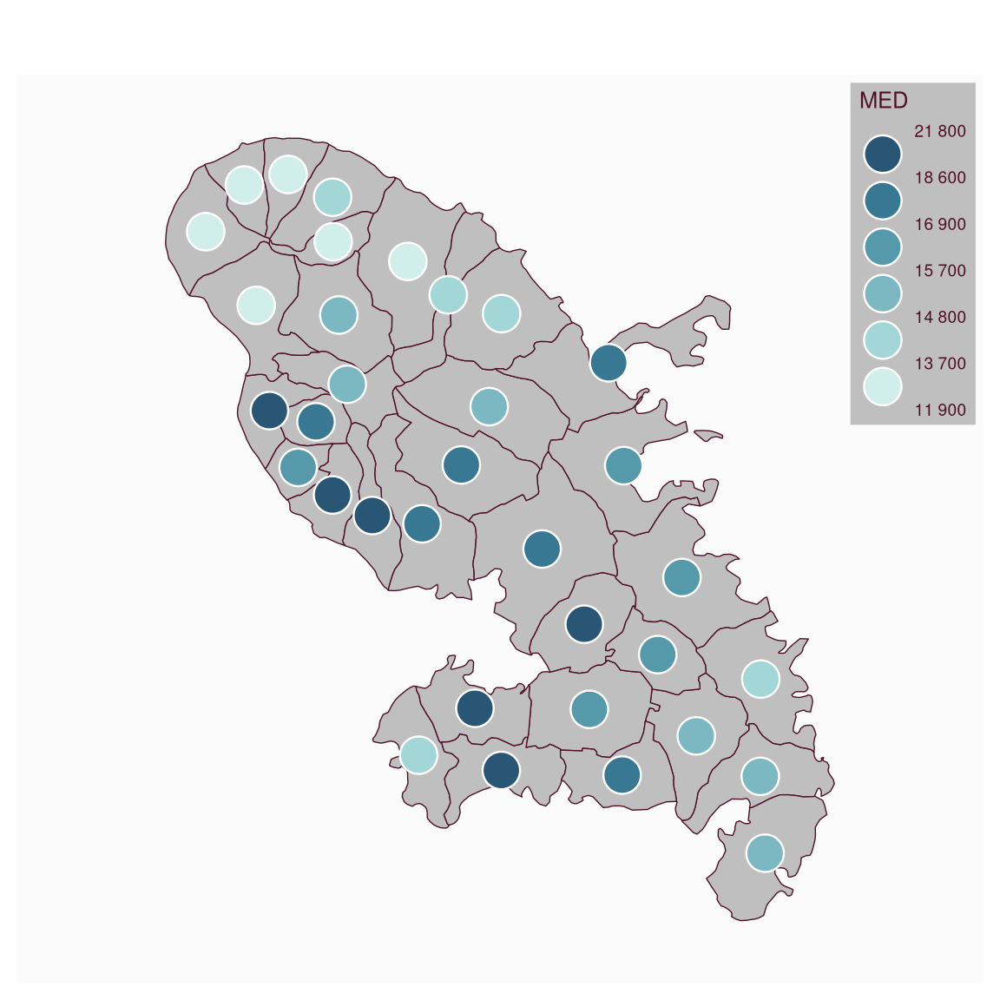
# lines
mf_map(mtq, extent = flows)
mf_map(
x = flows, var = "fij", type = "choro",
breaks = "equal", nbreaks = 3, add = TRUE,
lwd = 5, pal = "Burg", leg_horiz = TRUE,
leg_box_cex = c(.7, 1),
leg_val_rnd = 0, leg_pos = "bottomleft"
)
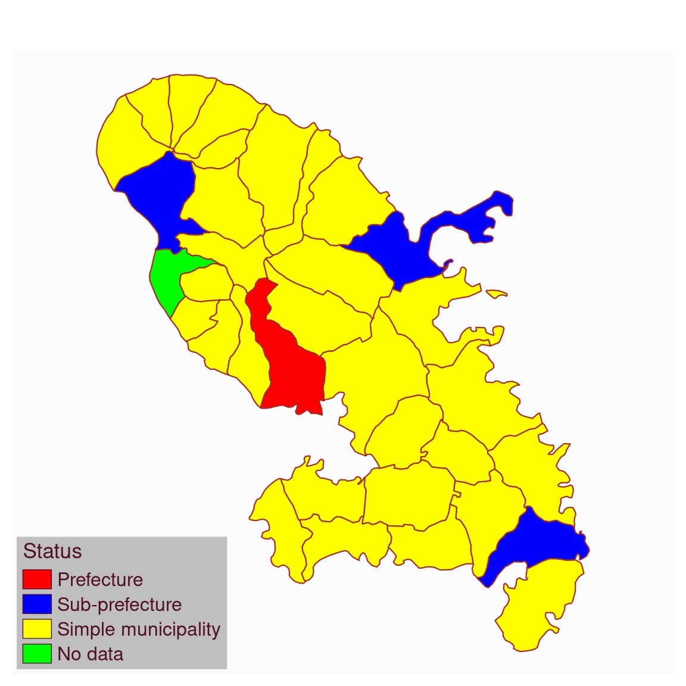
# Typology map type
# polygons
mtq[6, "STATUS"] <- NA
mf_map(
x = mtq, var = "STATUS", type = "typo",
col_na = "grey90", border = "white",
pal = c("#FFE93F", "#00214E", "#7C7C7C"),
val_order = c("Prefecture", "Sub-prefecture", "Simple municipality"),
lwd = .5, leg_pos = "bottomleft",
leg_title = "", leg_title_cex = 1,
leg_val_cex = .9, leg_no_data = "No data",
leg_box_cex = c(.5, 3), leg_box_border = NA
)
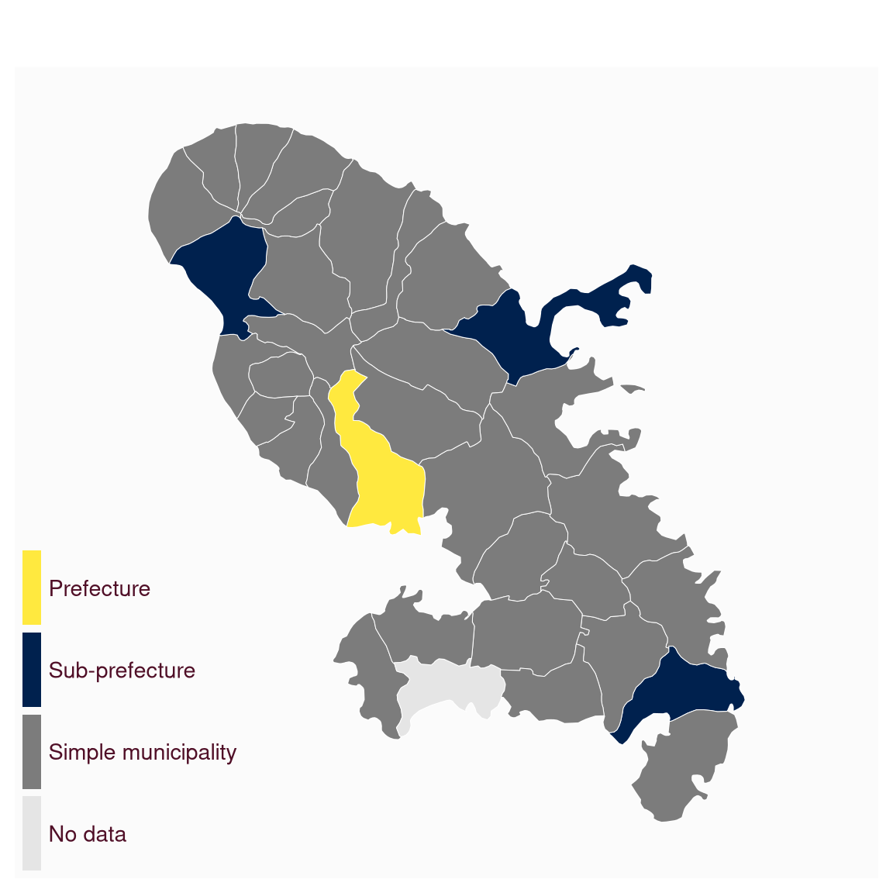
# points
mf_map(
x = pts, var = "STATUS", type = "typo",
cex = 3, pal = "Dark 3", border = "grey",
leg_pos = "bottomleft"
)
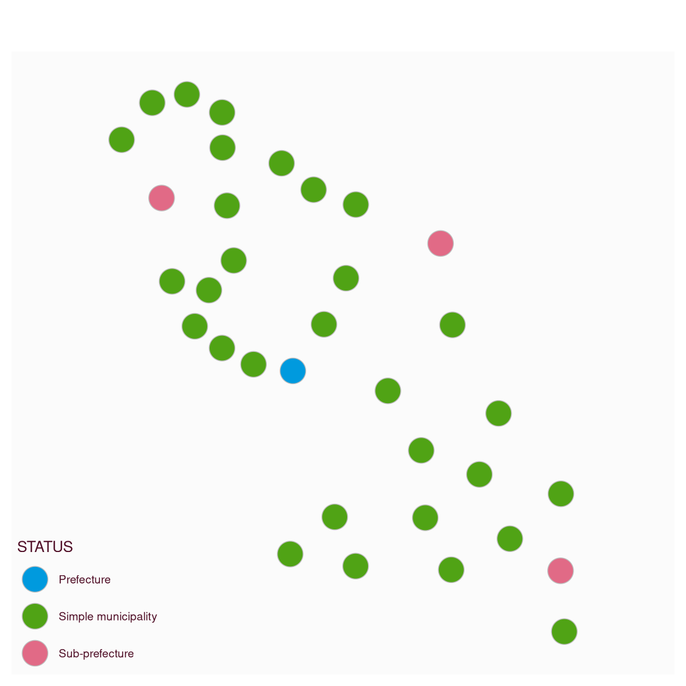
# lines
mf_map(mtq, extent = flows)
mf_map(
x = flows, var = "sj", type = "typo",
add = TRUE,
lwd = 2, pal = c("red", "blue"),
leg_pos = "bottomleft"
)
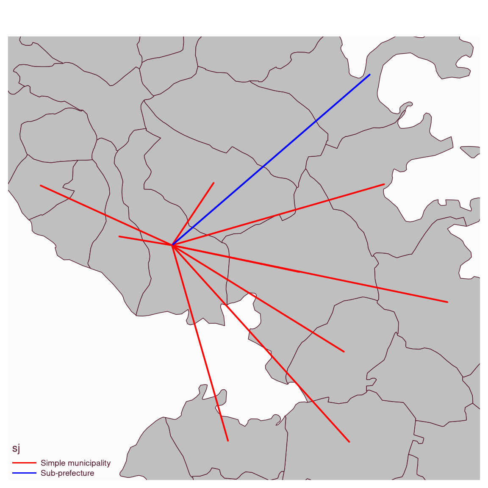
# Proportional symbols map type
mf_map(mtq)
mf_map(
x = mtq, var = "POP", type = "prop",
inches = .4, symbol = "circle", val_max = 90000,
col = "tomato1", border = "blue", lwd = 1,
leg_pos = "topright", leg_title = "Population",
leg_title_cex = 1, leg_val_cex = .8, leg_val_rnd = 0,
leg_frame = TRUE, add = TRUE
)
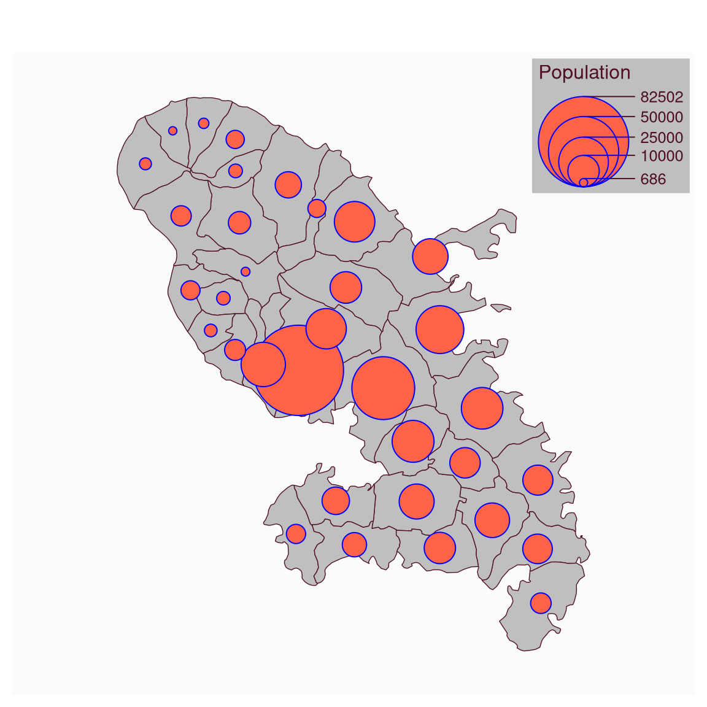
# Proportional symbols with choropleth coloration map type
mf_map(mtq)
mf_map(
x = mtq, var = c("POP", "MED"), type = "prop_choro",
inches = .2,
val_max = 90000, symbol = "circle",
col_na = "grey90", pal = "Cividis",
breaks = "msd", nbreaks = 4, lwd = 1,
leg_pos = "topright",
leg_title = c("Population", "Median Income"),
leg_val_rnd = c(0, 1),
leg_horiz = c(TRUE, FALSE),
leg_title_cex = .9,
leg_val_dec = ",",
leg_val_cex = .8,
leg_size = 1,
add = TRUE
)
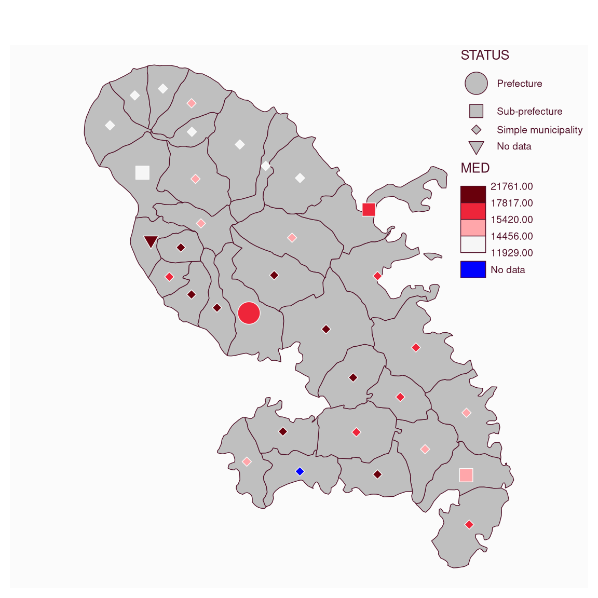
# Proportional symbols with typology coloration map type
mf_map(mtq, extent = flows, expandBB = c(0, .5, 0, 0))
mf_map(flows, c("fij", "sj"), "prop_typo",
val_order = c("Sub-prefecture", "Simple municipality"),
pal = c("steelblue", "lightblue"), lwd_max = 30,
leg_pos = "topleft", leg_title = c("commuters", "destination")
)
mf_map(
x = mtq, var = c("POP", "STATUS"), type = "prop_typo",
inches = .2, border = "tomato4", lwd = 1,
pal = c("darkblue", "steelblue", "lightblue"),
val_order = c("Prefecture", "Sub-prefecture", "Simple municipality"),
leg_pos = "bottomleft",
leg_title = c("Population", ""),
leg_no_data = "No dada",
add = TRUE
)
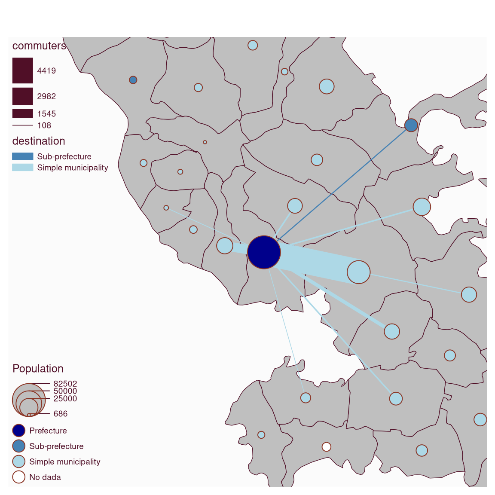
# Symbols map type
mf_map(mtq)
mf_map(mtq, "STATUS", "symb",
pal = "Berlin", border = "white", lwd = 1,
cex = c(4, 3, 2), pch = c(21:23), col_na = "red",
val_order = c("Prefecture", "Sub-prefecture", "Simple municipality"),
leg_title = ""
)
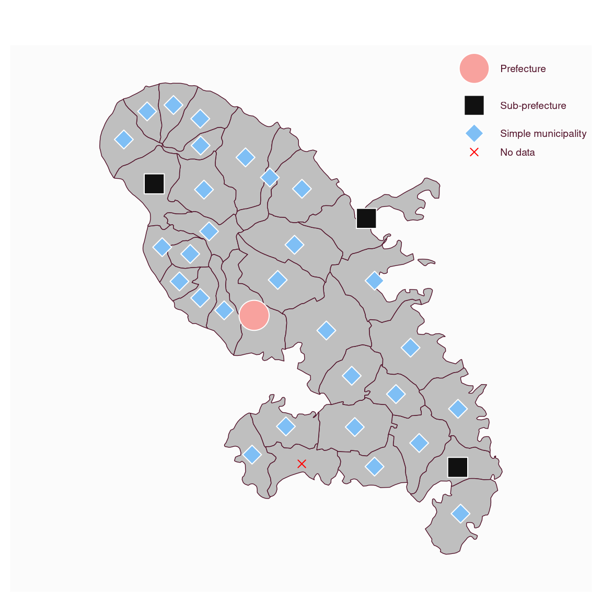
# Graduated symbols map type
mf_map(mtq, bg = "cornsilk2")
mf_map(flows, "fij", "grad",
breaks = "geom", nbreaks = 3,
lwd = c(1, 3, 7),
leg_title = "N. commuters",
leg_pos = "bottomleft", leg_val_rnd = 0
)
mf_map(mtq, "POP", "grad",
breaks = c(686, 5000, 25000, 82502),
cex = c(1, 2, 4), pch = 22, col = "steelblue",
leg_title = "Population", leg_pos = "topright",
leg_frame = TRUE
)
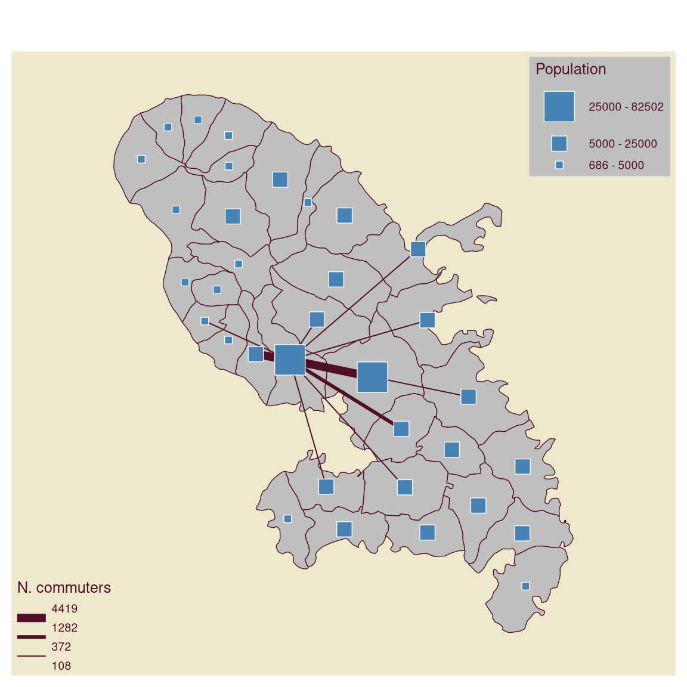
# Symbols with choropleth coloration map type
mf_map(mtq)
mtq$STATUS[4] <- NA
mf_map(mtq, c("STATUS", "MED"),
type = "symb_choro", lwd = 1,
pal = "Reds 3", breaks = "quantile", nbreaks = 4,
cex = c(2, 1, 1), pch = c(20, 21, 23), pch_na = 22,
leg_pos = "topright", border = "white", col_na = "blue",
val_order = c("Prefecture", "Sub-prefecture", "Simple municipality")
)
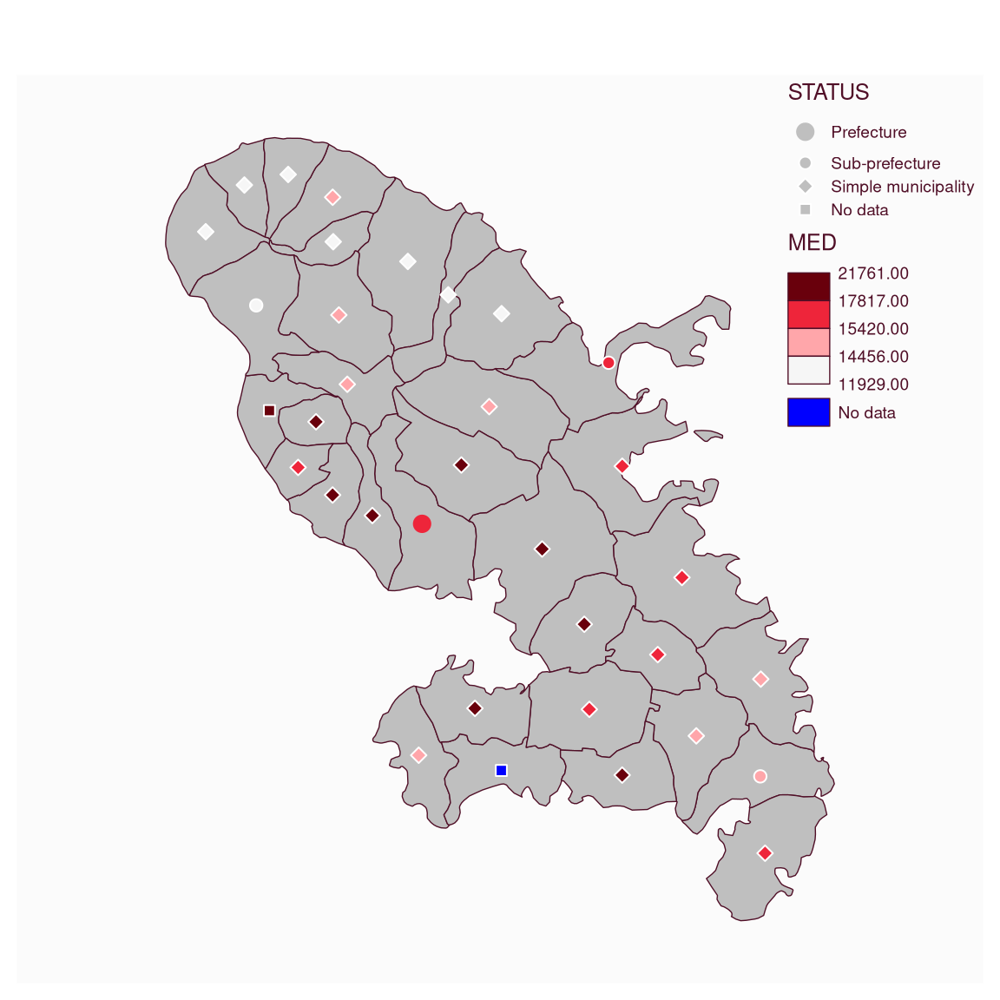